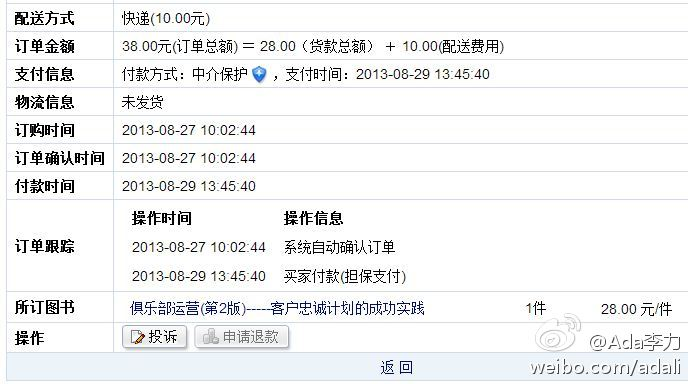

有次打电话给前公司同事，听到背景音吵得不行，而我之前的印象是办公室气氛是一直很安静也有些压抑的，问了问才知道，两个香港大老板都不在的缘故，于是办公室闹翻了天。- 有感于我最近加入了两个QQ群。

Ada李力
2013-08-29
Ada李力
2013-08-29
关系型数据库造就了几个IT巨头，不知道NOSQL是否也能如此？
@CSDN云计算:
NOSQL正在被更多的公司所接受，在选型时如何考虑关系型数据库和NOSQL数据库的差异？迁移及NOSQL应用过程中有哪些利弊、陷阱与挑战？NOSQL如何运用于大型管理系统的开发和使用，人人游戏如何玩转HBase，欢迎到本期CSDN云计算俱乐部找到答案。活动马上要开始啦，同学们快来占座哦 @CSDN云计算俱乐部

Ada李力
2013-08-29
以前企业对ERP有这么一句话：“不上ERP是等死，上了ERP是早死”。其实这句话更准确的表达是：“不上ERP一定死，上了ERP可能活得更好，可能死得更快”。— 这事儿怎么说都有点悲惨的味道，是因为这个过程中，注定有人被淘汰。
Ada李力
2013-08-29
就是怕等级意识浓厚的人，被人叫大牛，倒沾沾自喜起来。//@爱开源的社区是中心:这就如同Linux基金会现在管搞技术的都叫Guru是一样的，倒是不用担心，反倒是这样的等级意识应该摒除。每个人都应该有自信称自己是Guru或者大牛，并努力对得起这个称呼

Ada李力
2013-08-29
买旧书比买新书还贵。在孔夫子旧书网上找到一本书，按书的定价卖，快递费一点不少，还有一笔手续费。－ 后来我能理解贵的原因了，这本旧书挂网上都快两年了。
- 